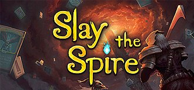

玩遊戲
第一次接觸遊戲是在4歲的時候，那時候還在玩一些網頁遊戲，
那是個Flash小遊戲還很盛興的時代。
然後就養成了這個興趣，現在我也是一樣經常玩各式各樣的遊戲。
LOL/英雄聯盟
Slay the Spire/殺戮尖塔

Hollow Knight/空洞騎士
LOL是一款營運了12年的Moba類遊戲，
我是在當時2012年TPA世界冠軍的隔一年被朋友拉進來玩的，
因為TPA奪冠的關係，LOL也迅速的在台灣傳播開來，
時至今日，LOL一樣是世界聞名的遊戲。
殺戮尖塔是我去年(2022)從steam上入手的一款rougelike卡牌遊戲，
這款遊戲是2019年發行的，遊戲內有四位角色可以供玩家選擇，
每個角色的卡組特色也不同，由於這點產生了各式各樣的玩法，
在遊戲過程中會遇到各種隨機的事件，會決定當局接下來的走向，
是個非常好玩也耐玩的卡牌遊戲，有時候想到我就會打開來打一把。

空洞騎士，一款類銀河惡魔城的2D動作遊戲，
我從2021年開始玩的，這款遊戲帶來的沉浸感非常的好，
角色操作流暢，音樂動聽，難度雖然高，
但是不會到打不過完全玩不過去的情況，
遊戲中的NPC也很多。
據說開發團隊有在開發續作，不過一直延期，希望可以早日看到續作。
這款遊戲的OST:https://open.spotify.com/album/4XgGOMRY7H4hl6OQi5wb2Z?si=zssB1s8nQUm6F4efqgk6kA